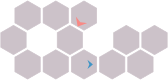

Predatory-Prey Hex World
Problem
The predator-prey hex world problem expands the hex world dynamics to include multiple agents consisting of predators and prey. A predator tries to capture a prey as quickly as possible, and a prey tries to escape the predators as long as possible. The initial state of the hex world is shown in the figure below. There are no terminal states in this game.

State and Action Space
There is a set of predators $\mathcal{I}_{\text{pred}}$ and a set of prey $\mathcal{I}_{\text{prey}}$, with $\mathcal{I} = \mathcal{I}_{\text{pred}} \cup \mathcal{I}_{\text{prey}}$. The states contain the locations of each agent: $\mathcal{S} = \mathcal{S}^1 \times \dots \times \mathcal{S}^{\mathcal{I}}$, with each $\mathcal{S}^i$ equal to all hex locations. The joint action space is $\mathcal{A} = \mathcal{A}^1 \times \dots \times \mathcal{A}^{\mathcal{I}}$, where each $\mathcal{A}^i$ consists of all six hex directions of movement.
Transitions and Rewards
If a predator $i \in \mathcal{I}_{\text{pred}}$ and prey $j \in \mathcal{I}_{\text{prey}}$ share the same hex with $s_i = s_j$, then the prey is devoured. The prey $j$ is then transported to a random hex cell, representing its offspring appearing in the world. Otherwise, the state transitions are independent and are as described in the original hex world.
One or more predators can capture one or more prey if they all happen to be in the same cell. If $n$ predators and $m$ prey all share the same cell, the predators receive a reward of $m/n$. For example, if two predators capture one prey together, they each get a reward of $1/2$. If three predators capture five prey together, they each get a reward of $5/3$. Moving predators receive unit penalty. Prey can move with no penalty, but they receive a penalty of $100$ for being devoured.